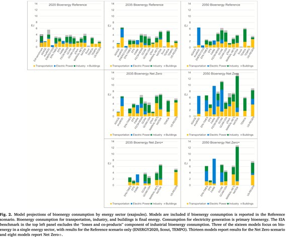

Bioenergy pathways within United States net-zero CO2 emissions scenarios in the Energy Modeling Forum 37 study
A new study published in Energy and Climate Change examines how bioenergy could contribute to achieving net-zero CO₂ emissions by 2050.

Using results from 16 leading energy-economic models in the Stanford Energy Modeling Forum’s 37th study (EMF-37), the research finds that bioenergy use will increase across electricity, transportation, industry, and buildings, with bioenergy paired with carbon capture and storage (BECCS) playing a critical role.
What role can bioenergy play in a net-zero future? A new multi-model study in Energy and Climate Change explores this crucial question, highlighting how bioenergy may evolve across the U.S. energy systems on the path to net-zero by 2050.
The study compares bioenergy use across three scenarios: a Reference, Net Zero, and Net Zero + scenario with optimistic technology assumptions. A central insight is the critical role of carbon removal. All net-zero scenarios require some form of CO₂ removal to offset residual emissions from hard-to-abate sectors. Bioenergy with carbon capture and storage (BECCS) emerges as one such option, with some models projecting up to 1,000 Mt removal annually by 2050. Other models lean heavily on direct air carbon capture and storage (DACCS), with deployments reaching as high as 2,200 Mt CO₂, while several use a combination of both. The balance between BECCS and DACCS varies sharply depending on technology costs and assumptions.
The study also underscores the land-use implications of large-scale bioenergy production. Dedicated energy crops could require 60-70 million acres if deployed at scale, raising concerns about the competition with food production and the natural ecosystem. In addition, emerging fuels like renewable diesel and sustainable aviation fuels (SAF) are expected to play a vital role in decarbonizing sectors such as heavy trucking, shipping, and aviation, where electrification is limited.
“While low-emission electricity is increasingly accessible, options for low-emission solid, liquid, or gaseous energy sources remain limited. Bioenergy presents one potential solution; however, its historical record reveals that anticipated emission reductions have often been overstated, with actual outcomes compromised by indirect land-use change emissions,” said Prof. Haewon McJeon of KAIST Graduate School of Green Growth and Sustainability. “To meet the growing demand for low-carbon energy beyond electrification, technology policies must implement rigorous monitoring, reporting, and verification standards to effectively address the sustainability challenges associated with large-scale bioenergy deployment.”
This comprehensive analysis highlights the importance of scaling advanced biofuels, preparing for the land-use trade-offs of dedicated energy crops, and investing in both BECCS and DACCS as complementary carbon removal strategies.
[paper link]: https://doi.org/10.1016/j.egycc.2025.100209
EMF-37 모델 비교 연구를 통해 본 탄소중립 경로상 바이오에너지의 기여
Energy and Climate Change에 게재된 본 연구는 미국이 2050년까지 탄소중립을 달성하는 과정에서 바이오에너지의 역할을 분석했다. EMF-37 프로젝트의 16개 에너지경제 모델 결과를 종합한 이번 연구는 전력, 교통, 산업, 건물 등 전 분야에서 바이오에너지 사용이 증가할 것으로 전망했다. 특히 바이오에너지와 탄소포집저장 (BECCS) 기술은 미래의 역할이 증대되며, 일부 모델에서는 연간 최대 10억톤의 CO₂ 제거가 필요하다고 분석했다. 한편, 다른 모델에서는 직접공기포집 (DACCS)에 더 무게를 두며, 두 기술 간에는 비용과 기술에 따라 상호 대체 관계를 보였다.
또한 바이오 에너지 작물 재배는 최대 2400만-2800만 헥타르의 토지가 필요할 수 있어, 식량 생산 및 생태계에 영향을 줄 수 있다는 문제가 제기된다. 동시에 재생 바이오 디젤 (renewable diesel)과 지속 가능한 항공 연료 (SAF)는 해운, 항공 등 전기화가 어려운 분야의 탈탄소화에 필수적이다.
KAIST 녹색성장지속가능대학원의 믹전해원 교수는 “전력 분야는 저탄소 전환이 빠르게 진행되고 있지만, 고체, 액체, 기체와 같은 연료들은 대체 수단이 제한적이다. 바이오에너지는 하나의 해법이 될 수 있으나 토지 이용 변화로 인한 배출 문제를 감안해야 하며, 증가하는 수요를 위해서는 철저한 모니터링과 검증 체계를 토대로 하는 기술 정책이 필요하다”라고 말했다.